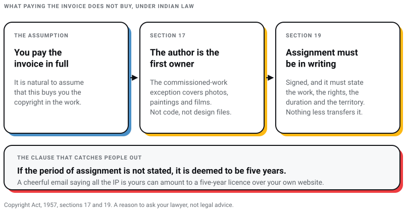
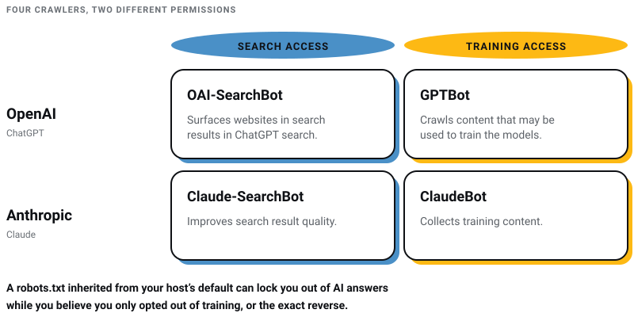

WEB DEVELOPMENT
WEB DEVELOPMENT
AI Website Builders vs Custom Development: Where the Shiny Tools Actually Break
AI website builders are fast, but are they right for your business? Discover where they excel, where they fail, and when custom development is the…

I run the kind of agency this post is telling you to interrogate. Pixel Street is a web design studio in Salt Lake, Kolkata, and most weeks we are the ones sitting on the answering side of a list like this.
So read what follows as a confession as much as a checklist. The first version of this article asked twelve questions that any competent agency, mine included, could answer well without telling you anything. Can I see your portfolio. What is your process. Nobody fails those. They are the hiring equivalent of asking a candidate whether they work hard.
The questions worth your time are the ones where a weak answer is hard to disguise. Who owns the code. What you can take with you if you leave. Who actually touches the work. What is deliberately missing from the quote. I lost two companies before Pixel Street, and the lesson that survived both failures is that you never build your main asset on ground somebody else controls. Half of this list is that lesson applied to a hiring conversation.
Here are the twelve I would ask, in order, with what a weak answer sounds like. Three of them barely existed as questions in 2023. Those are marked, and every claim below links to the rule or the document it comes from.

If you get one meeting and not three, ask these five and stop:
They are ordered by what a wrong answer costs you later, not by how interesting the answer is. The rest of this post is elaboration.
A portfolio is a curated argument. A live URL is a record. Ask for three you can open, then measure them yourself before the second meeting.
The measurement is free and takes ten minutes. Run the URLs through PageSpeed Insights and read the field data, not the lab score. Google's three Core Web Vitals thresholds are published: Largest Contentful Paint should occur within 2.5 seconds, Interaction to Next Paint should be 200 milliseconds or less, and Cumulative Layout Shift should stay at 0.1 or less (web.dev). Google's documentation is equally direct that "Core Web Vitals are used by our ranking systems", while warning that a good score does not buy you a top position (Google Search Central, updated December 2025).
One detail exposes stale expertise faster than anything else here. INP replaced First Input Delay as a Core Web Vital on 12 March 2024 (web.dev). An audit template, proposal or performance report that still reports FID was written for a metric Chrome retired more than two years ago, and nobody has looked at it since.
Beyond the numbers, two things in those three sites:
A weak answer sounds like a PDF of screenshots, or "those projects are under NDA" for all three.
The first half of that question is standard. The second half is the one that works. Industry experience is easy to claim and moderately useful. An agency that cannot name a single decision it regrets has either not shipped much or is not being straight with you.
Listen for whether the answer is specific enough to describe exactly one agency. Four years ago I made a cold call to ITC with a fancy deck and zero credibility. Today we design for them, and for Coca-Cola and Marico. That sentence describes one studio in Kolkata and nobody else. Compare it with "we have worked with clients across many verticals", which describes everyone and therefore nobody.
Useful follow-ups: what the buying process looks like in your sector, and what they learned about those customers that they would not have guessed. An agency that has done the work will have opinions. An agency that has read your website will have adjectives.
Team size is a vanity number. Ask instead who writes the code, who designs the interface, who writes the words, and which of those four is a contractor you will never meet. Then ask who your point of contact is when the person who designed it has moved to another project.
There is nothing wrong with subcontracting. There is something wrong with not disclosing it, because it changes who is accountable and how fast a fix arrives. If most of the work is going to one contractor anyway, you are paying agency rates for a freelancer relationship, and the honest comparison of those two models is in freelancer versus agency.
A weak answer sounds like "you will have a dedicated project manager", offered as the whole reply.
This used to be a two-way choice. In 2026 it is a three-way choice, and the third option is the one that quietly changes what you own.
Custom code costs more and takes longer, and it fits requirements that nothing off the shelf handles. A content management system is cheaper and faster and trades some flexibility for that. A proprietary builder is cheaper and faster again, and trades the site itself. The trade-offs between the first two are in custom versus template design, and my assessment of the AI-builder generation, from a studio that uses those tools daily, is in AI website builders versus custom development.
What should raise your eyebrow is an agency naming the stack before asking what the site has to do. Recommending the platform they know best is not automatically wrong, but it should come with a reason you can follow. If the reason is only that they are quick on it, you are buying their convenience.
It is natural to assume that paying the invoice buys the copyright. Under Indian law it usually does not, and that is the most expensive misunderstanding on this page.
Section 17 of the Copyright Act, 1957 starts from the position that "the author of a work shall be the first owner of the copyright therein". There is an exception for commissioned work, but read what it actually covers: "a photograph taken, or a painting or portrait drawn, or an engraving or a cinematograph film made, for valuable consideration at the instance of any person" (Section 17). Website code and design files are not on that list. So absent a written agreement, the studio that built your site can remain the first owner of the copyright in it after you have paid in full.
Getting it transferred has its own formalities. Under Section 19, no assignment of copyright is valid "unless it is in writing signed by the assignor or by his duly authorised agent", and the assignment must "identify such work, and shall specify the rights assigned and the duration and territorial extent". Then the clause that catches people out: "if the period of assignment is not stated, it shall be deemed to be five years from the date of assignment" (Section 19). A cheerful email saying "all the IP is yours" can therefore amount to a five-year licence over your own website. Have a lawyer draft the clause. This paragraph is a reason to ask, not legal advice.

Separately from copyright, go through the accounts one at a time and check whose name each is in. Domain registrar, DNS, hosting, repository, analytics, Search Console, Google Business Profile, email. Each should be owned by your company, with the agency added as a delegated user. That takes an afternoon at the start. Recovering a domain registered in a former vendor's name takes considerably longer.
A weak answer sounds like "of course it is yours, you paid for it", with nothing in the contract that says so.
I have written before about rented land. Your website is supposed to be the one property you fully own, and a platform subscription can quietly turn it back into a lease. Ask about the exit before you sign the entry.
The vendors are honest about this in their own documentation, which is where you should read it rather than in a sales call. Wix states plainly that a Wix site "needs to be hosted and operated on Wix's servers", and that "the SaaS architecture does not support external hosting since it uses Wix's proprietary technology" (Wix Help Center). Squarespace does offer an export, with published limits: only one blog page exports, and album, cover, index, info, calendar, portfolio and store pages, page-specific headers and footers, custom CSS and style settings do not come with it (Squarespace Help Center).
None of that makes these platforms wrong for a five-page brochure site. It makes them a decision rather than a default.
| Build type | Who can host it | What you can take | What stays behind |
|---|---|---|---|
| Custom code | Any host you choose | Repository, database, build pipeline, design files | Nothing, provided copyright is assigned to you in writing |
| Self-hosted CMS | Any host that runs it | Full database and file export, theme, plugins | Licences that are not transferable, and anything built as a vendor-hosted add-on |
| Hosted CMS with export | The vendor | An XML export of pages and one blog | Store, album, event and index pages, custom CSS, style settings, per-page headers and footers |
| Proprietary builder | The vendor only | Your content, manually | The site itself, by the vendor's own description |
Ask for an offboarding clause. Two sentences will do: what gets handed over, in what format, and how long they keep a backup after the relationship ends.
A weak answer sounds like "why would you want to leave?"
The second half of that question is the one that separates people who have read the guidance from people who have read the sales deck. Google published its own advice on optimising for generative AI search on 15 May 2026, and a fair amount of what is being sold as an AI package contradicts it in writing.
On what matters most, Google says: "Creating content that people find unique, compelling, and useful will likely influence your website's presence in generative AI search in the long run more than any of the other suggestions in this guide." On breaking pages into machine-friendly fragments: "There's no requirement to break your content into tiny pieces for AI to better understand it." On schema as an AI lever: "Structured data isn't required for generative AI search, and there's no special schema.org markup you need to add" (Google Search Central).
One more fact worth having in your pocket. FAQ rich results stopped appearing in Google Search on 7 May 2026, and Google has since removed the documentation for the feature (Google Search Central), so FAQ schema is no longer a route to extra space on a results page.
What is worth asking about is crawler access, because almost nobody checks it and it is a genuine on or off switch. Search access and training access are separate permissions from the same companies. OpenAI documents OAI-SearchBot as the agent "used to surface websites in search results in ChatGPT's search features", while GPTBot "is used to crawl content that may be used in training our generative AI foundation models" (OpenAI). Anthropic splits its crawlers the same way, with Claude-SearchBot improving "search result quality" and ClaudeBot collecting training content (Anthropic). A robots.txt file inherited from a host's default can therefore lock you out of AI answers while you believe you only opted out of training, or do the exact reverse of what you intended.

Ask which of those agents your site will allow, why, and where that decision is recorded in the launch checklist.
This is the same question Google answers in its guidance, phrased as a hiring question. Their own illustration contrasts a generic "7 Tips for First-Time Homebuyers" against "Why We Waived the Inspection & Saved Money". One of those could be written by anybody. The other could only be written by the person it happened to.
So ask who writes the content, whether it is in-house or subcontracted, and what the interview step looks like. If nobody is going to spend an hour with your sales team, the copy will be assembled from your competitors' websites, and it will read like it. That is a common failure in agency content, and no amount of technical optimisation repairs it.
A weak answer sounds like a page count and a per-word rate with no interview in the process.
Accessibility moved from good practice to legal exposure while much of the industry was not paying attention, and it now reaches Indian businesses two separate ways.
The standard to name in the contract is WCAG, which reached version 2.2 as a W3C Recommendation on 12 December 2024 (W3C). Specify the version and the conformance level, because "accessible" on its own is not a testable requirement.
If you sell to consumers in the European Union, the European Accessibility Act applies to you regardless of where you are based. Directive (EU) 2019/882 has applied since 28 June 2025 and explicitly covers e-commerce services, defined as "services provided at a distance, through websites and mobile device-based services by electronic means and at the individual request of a consumer with a view to concluding a consumer contract" (EUR-Lex). A Kolkata exporter with an EU checkout is inside that definition.
Domestically, the direction of travel is just as clear. On 30 April 2025 the Supreme Court of India held, in Pragya Prasun and Amar Jain, that the right to digital access forms part of the right to life under Article 21, and issued directions to financial and telecom regulators (LiveLaw). SEBI followed on 31 July 2025 with a circular titled "Rights of Persons with Disabilities Act, 2016 and rules made thereunder, mandatory compliance by all Regulated Entities", which puts digital accessibility audits on a fixed timetable for every entity it regulates (SEBI). If you are a regulated entity, this is procurement policy now, not an ideal.
What to ask, concretely: which WCAG version and level, tested how, and by whom. Ask whether testing includes a keyboard-only pass and a screen-reader pass, or only an automated scan. If an overlay script is proposed, ask what it changes in the underlying markup. The fuller treatment is in website accessibility compliance.
A higher quote with a specified scope is usually cheaper than a low quote with an open one. What you are looking for is a document where the boundary is drawn on purpose, so ask for the exclusions in writing alongside the inclusions.
Things that should appear explicitly, one way or the other:
Ask which pricing model the quote uses, because each fails differently. A fixed price is predictable and punishes scope change. An hourly rate is fair to both sides and unpredictable without a written cap. A retainer suits continuous work and wastes money in a quiet month. Time-and-material fits open-ended builds and needs a phase-by-phase ceiling to stay sane.
On SSL, treat a large certificate line item as a question rather than a cost. Let's Encrypt states that "anyone who owns a domain name can use Let's Encrypt to obtain a trusted certificate at zero cost" (Let's Encrypt). Paid certificates have legitimate uses. Charging you meaningfully for basic domain-validated HTTPS in 2026 is not one of them.
For what the local market looks like, the breakdown of components that move a price is in web design cost in Kolkata. I have deliberately not printed a figure here, because a number without a scope is the thing you are trying to avoid.
Website projects rarely stall on the code. They stall on content, approvals and access, all of which are your side of the table. So ask two things: what the agency needs from you, and what the written consequence is when you do not deliver it on time.
A good process answer covers how they gather requirements, what research they do before designing, where your feedback enters, how testing works, and what each milestone means. On research, an agency that thinks properly about your site can answer these before you ask:
Then get milestones and payment tied together in the contract: a deposit, staged payments against named deliverables rather than dates alone, and a final payment linked to launch or a defined post-launch window. Ask what a delay on your side does to the schedule and to the price, and get that answer before it is relevant rather than after.
You will find stage-by-stage week ranges published all over this industry, and none of them trace back to anything better than another agency's blog. Ignore them. Any agency quoting a timeline should be quoting their timeline, for your scope, in writing.
Launch is the middle of the project, not the end of it. Get one name against each of the following: hosting, SSL renewal, CMS and plugin updates, backups and their restore test, security monitoring, uptime alerts. Then get the price, the frequency and the response time in writing.
Certificate renewal deserves a specific question this year. In April 2025 the CA/Browser Forum passed ballot SC-081v3, which shortens the maximum lifetime of a TLS certificate on a fixed schedule (CA/Browser Forum). The dates: 398 days until 15 March 2026, then 200 days, dropping to 100 days on 15 March 2027 and 47 days on 15 March 2029 (DigiCert, May 2025). Manual renewal is on its way out as a habit. Ask whether renewal is automated, who receives the expiry alert, and what happens when that person leaves. The mechanics are in our guide to SSL.
A weak answer sounds like "we will handle all of that", with no owner, no interval and no price.
Every answer worth hearing here has the same quality, and it is not enthusiasm. It is specificity. Specific names, dates, formats, exclusions. Vagueness in a sales conversation is not a personality trait. It is usually a decision nobody has made yet, and you will be the one paying for it when they finally do.
Notice also that none of the twelve is about taste. Whether you like the look of an agency's work is the one thing you can judge in five minutes without help. This page is about everything you cannot see in a portfolio, which is why it has to be asked out loud.
At Pixel Street we are a web design agency in Kolkata, and we would rather be asked all twelve than none. If you want to put them to us directly, you can reach us here.
Who owns the code, the design files and the accounts when the relationship ends. It is the only answer on the list that can cost you the whole asset rather than some money or some time, and in India the default legal position is probably not the one you assume.
Not automatically. Section 17 of the Copyright Act, 1957 makes the author the first owner, and its commissioned-work exception covers photographs, paintings, portraits, engravings and cinematograph films, not code. Section 19 requires any assignment to be in writing, signed, identifying the work, the rights, the duration and the territory, and treats an unstated duration as five years. Get a written assignment clause drafted by a lawyer rather than relying on an invoice.
It depends on how much of the work is one person's job. A single well-chosen freelancer beats a distracted agency on a small site; an agency earns its margin on projects that need design, development, content and coordination running in parallel. Ask question 3 above of both, since an agency that subcontracts everything is a freelancer arrangement with a markup. The longer comparison is in freelancer versus agency.
There is no honest single figure, which is why this post does not print one. Price moves with the number of unique templates, whether the content is written for you, what has to integrate with what, and how much of the post-launch work is included. Compare quotes on scope rather than on total, and see web design cost in Kolkata for the components that actually move the number.
Not always, but insist on knowing what it costs you in portability. Wix's own documentation says a Wix site has to be hosted and operated on Wix's servers, and Squarespace publishes a list of page types, styles and custom CSS that its export leaves behind. For a small brochure site that may be an acceptable trade. For a site you expect to grow, ask question 6 before you sign, not after.
18 min read 21 cited sources WEB DEVELOPMENT
Author
Khurshid Alam is the founder of Pixel Street, an AI-native design & development studio. Design thinking on weekdays and spreadsheets on weekends.
He writes about growth, design, and AI, mostly because someone has to say the quiet parts out loud.
WEB DEVELOPMENT
AI website builders are fast, but are they right for your business? Discover where they excel, where they fail, and when custom development is the…
 Digital Marketing
Digital Marketing
Learn about AEO vs GEO vs SEO. Discover what changed with AI search, what still matters, and how to optimize for Google AI Overviews, ChatGPT, and…
 Digital Marketing
Digital Marketing
Want ChatGPT to recommend your brand? Learn how AI chooses businesses, where citations come from, and practical ways to increase your visibility.